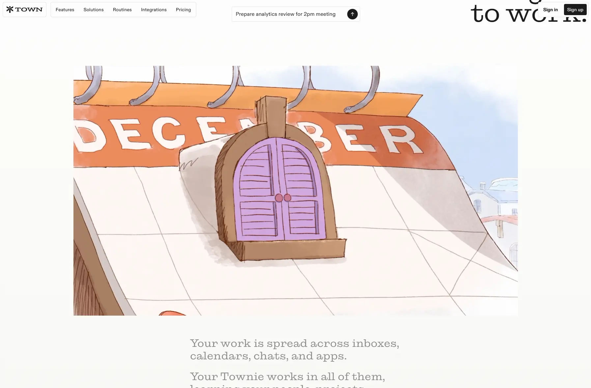

Town
- Лендинг
- Сервисы и приложения
- ИИ-сервисы
- Обычным пользователям
- Продуктовым командам
- Коллаж и иллюстрация
- Игривый
- Светлая тема
- Нейтральный фон
- Рисованная графика
- Ломаная сетка
- Микроанимации
- Next.js
- React
- Turbopack
- Google Analytics 4
- Sentry
- Английский язык
- Действующий сайт

Что это
Сайт ИИ-ассистента Town. Главная встречает рукописной иллюстрацией календаря, огромным обрезанным заголовком и тёплой палитрой; дальше — рассказ о том, как Townie работает в почте, календарях, чатах и приложениях. Тёплый сайт ИИ-ассистента, оформленный умилительными иллюстрациями и хаотичной вёрсткой.
Что смотреть в первую очередь
Смотреть первый экран с календарём-иллюстрацией и обрезанным заголовком, затем — рассказ о работе Townie.
Приёмы
- Рисованная графика
- Ломаная сетка
- Микроанимации
Интересные факты
- Первый экран — рукописная иллюстрация календаря на декабрь: оранжевая шапка, кремовые страницы и лиловая дверца.
- Гигантский обрезанный заголовок «to wo...» выглядит как надпись, вылезающая за экран; рядом — строка запроса «Prepare analytics review for 2pm meeting».
- Меню обычное, но собрано в две группы: Features, Solutions, Routines, Integrations, Pricing.
- Ниже — крупный serif-текст о том, что работа размазана по почте, календарям, чатам и приложениям, а Townie работает во всех них.
- Палитра тёплая: кремовый фон, оранжевый, лиловый и пыльно-розовый в иллюстрации.
- В коде — Next.js с Turbopack, Sentry и Google Analytics 4.
Паспорт
- Домен
- town.com
- Тип сайта
- Лендинг
- Категории
- Сервисы и приложения
- Подкатегории
- ИИ-сервисы
- Для кого
- Обычным пользователям, Продуктовым командам
- Стиль
- Коллаж и иллюстрация, Игривый
- Язык
- Английский
- Страна
- не указано
- Автор
- Town
- Год
- не указано
- Добавлен в коллекцию
- 15.11.2026
Палитра
-
#FBFAF8— 73% кадра -
#D8BFD0— 8% кадра -
#EF9763— 6% кадра -
#B4866B— 4% кадра -
#D5E2F3— 4% кадра
- Режим
- Светлая
- Цвет фона
- Нейтральный
Технологии
- Next.js
- React
- Turbopack
- Google Analytics 4
- Sentry